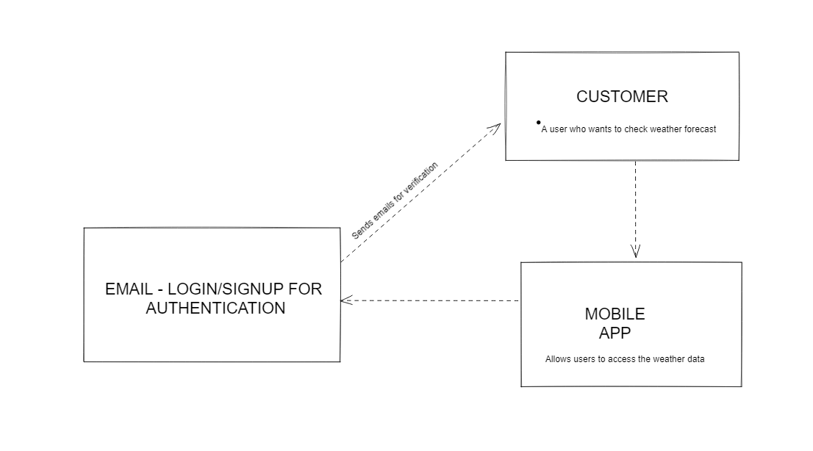
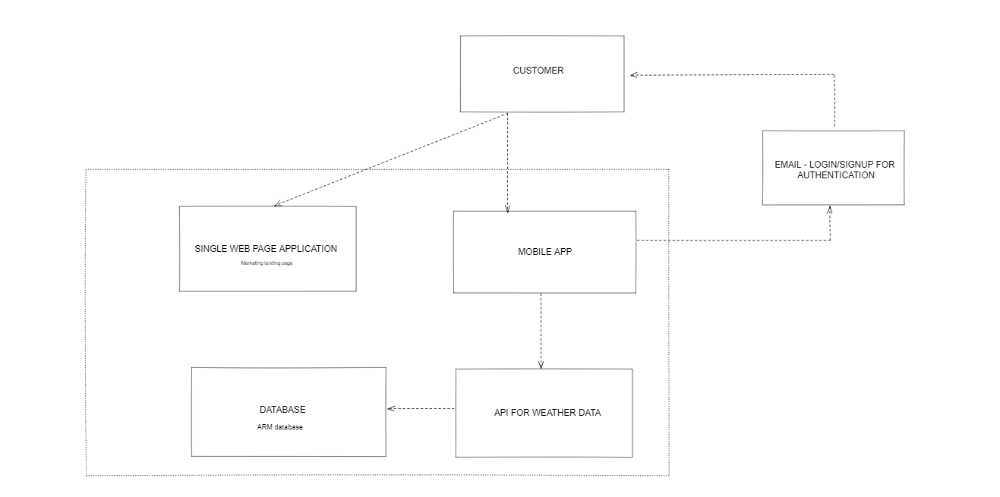
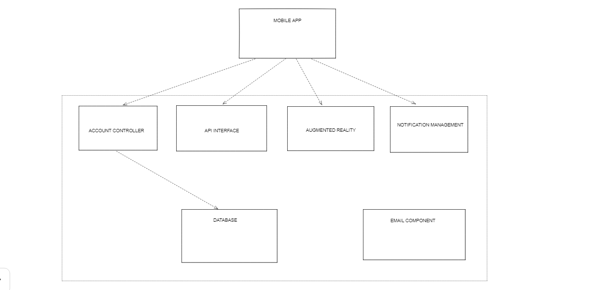

The main meteorological characteristics that need to be continuously watched are the day-to-day variations of weather variables including rainfall, temperature, wind speed, and humidity. At regular intervals, the meteorological satellites offer a synoptic measurement of weather characteristics. Weather forecasting now heavily relies on satellite photos of cloud cover and other variables like winds, rainfall, sea surface temperature, etc.
The India Meteorological Department in India does not promptly offer enough information (IMD). Radio and television are the only available media for disseminating information about impending natural disasters. Although there have been significant improvements in information delivery, it is not current. Quality of observational data, timeliness, availability, and, most crucially, the type and dependability of the communication technologies available for prediction distribution are all issues with
A weather app that leverages augmented reality to deliver visual data is therefore required (AR). A weather app allows users to track current weather conditions in real-time and make forecasts for the given location. In order to enhance user experience and provide better visualization utilizing augmented reality (AR), we are developing a weather app.
Unity3D Editor
Flutter Package for Unity
Clone the repository.
git clone https://github.com/ZaneAtlas/Cloudiocast.git
Run the command below to install all the dependencies in the project
flutter pub get
To run this project, you will need to add the following sdk in your system.
flutter sdk v3.3.2
dart sdk v2.18.1
Level 1: Context Diagam
Level 2: Container Diagam
Level 3: Component Diagam
Contributions are always welcome!
See for ways to get started.
Please adhere to this project's 'code of conduct'.
This is Cloudiocast, your accurate AR weather app. It provides accurate and you can find information easily using our user friendly User interface, as well as our premium feature, AR view. AR view gives you a effcient mixed reality experience to get accurate weather forecasts.